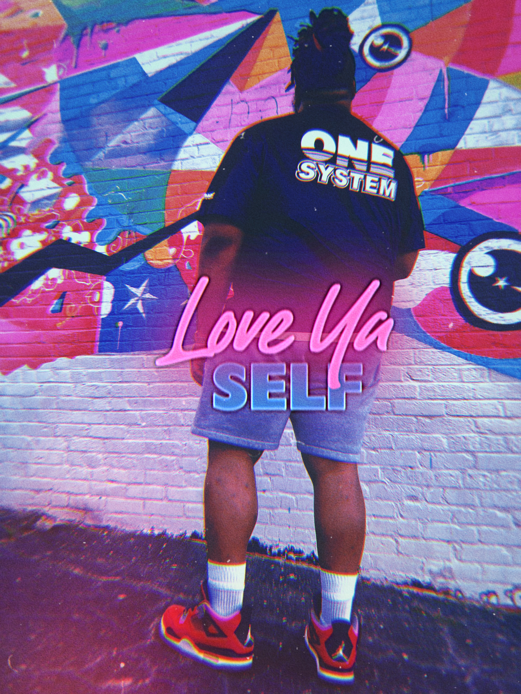
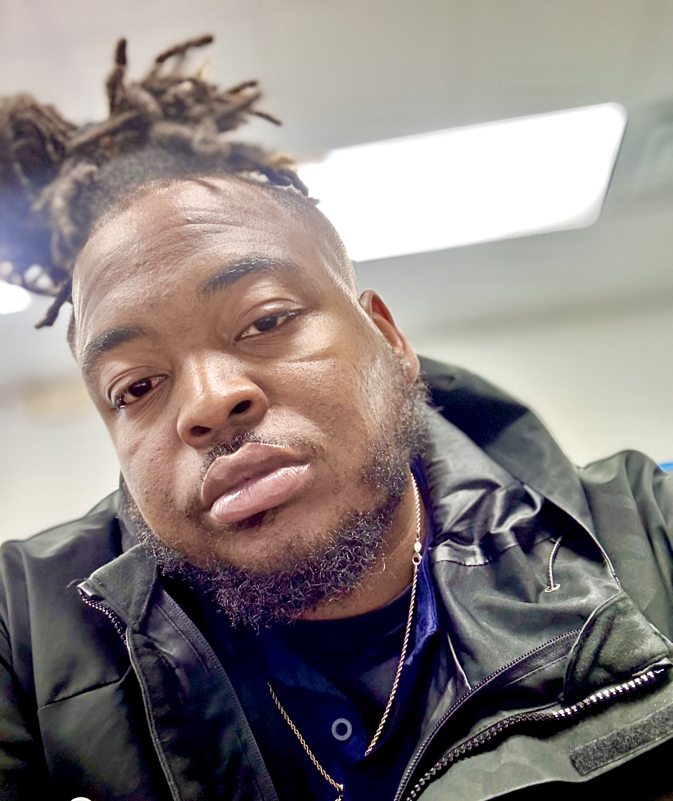

About Me
Austin J Murphy
I'm a proud first-generation college graduate from Currie, North Carolina. Growing up in a small, tight-knit community, I learned the value of hard work and perseverance from an early age. My journey through higher education has been a testament to these values and the unyielding support of my family and mentors.

I graduated in 2016 as a double major in Psychology and Business Management, a challenging yet incredibly rewarding academic path. Balancing a full-time course load with full-time work was no easy feat, but it taught me the importance of time management, resilience, and unwavering dedication. Throughout my college years, I faced numerous hardships, from financial struggles to personal challenges, but each obstacle strengthened my resolve and deepened my appreciation for the opportunities I was creating for myself and my future.
My passion for psychology stems from a deep-seated desire to understand the human mind and help others navigate their mental health journeys. Coupled with my business management studies, I aim to merge these fields to foster healthier, more productive organizational cultures and support employee well-being.
Looking ahead, I am excited about the bright future that lies before me. My experiences have equipped me with a unique perspective and a robust skill set that I am eager to apply in my professional endeavors. I am driven by the belief that with determination and a positive outlook, any challenge can be transformed into an opportunity for growth and success.Thank you for taking the time to learn a bit about my journey. I am enthusiastic about what the future holds and the contributions I can make to both my community and the broader world.
